Analog Waveguide
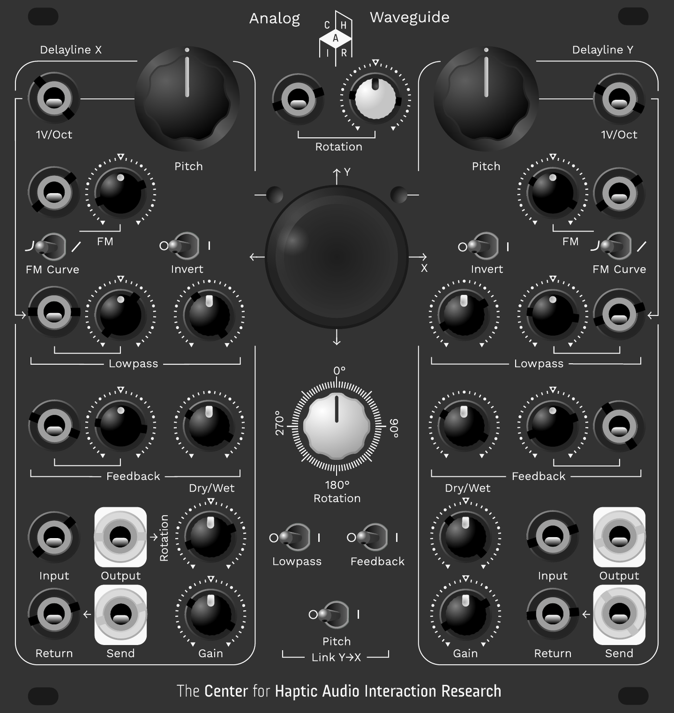
Preface
You are probably reading this because you have bought our Analog Waveguide or may be considering doing so. In any case: congratulations on this excellent choice, you have our deepest gratitude for your trust and support.
This manual is purposely technical to satisfy those of you who desire to thoroughly understand the conceptual background and electro-physical principles of this resonator. It is meant to empower those who want to master this instrument in its entirety and know all details of every control and parameter.
That said, please do not be deterred or discouraged by the complexity of this manual — luckily there is absolutely no necessity to internalize the underlying math to be able to make great sounds, because the Analog Waveguide is a very playful device, which lets you explore sounds intuitively and will give you joy doing so, even if you have not absorbed every concept in the manual. For further accessibility, we have compiled a playlist of user videos for the Analog Waveguide. You can find the playlist on our YouTube channel.
There are excellent performative and instructional videos introducing you to various synthesis techniques with the Analog Waveguide, some of which are taken from this very manual. We're grateful to have many gifted instructors and performers amongst our customers. Thank you, you are indispensable!
Now grab a tea and start reading — or just skip it, and start to experience the exciting sonic worlds of the Analog Waveguide on your own terms.
Module Overview
The Analog Waveguide is a resonator, the fundamental component of all physical modeling techniques. It transforms an external, unpitched excitation audio signal, such as a click, a burst of noise, or any sound captured by a contact microphone, into a rich, pitched sound.
The Analog Waveguide can imitate various real-world instruments including, but not limited to: a drum skin, a string, a hand pan, a woodblock, or a sheet of metal that vibrates in response to an external signal.
This Eurorack module is arguably the first analog resonator capable of producing rich inharmonic resonances with dense spectra. It effortlessly allows hundreds of partials to resonate in harmony with a continuous audio input signal. It is conceived to explore analog physical modeling techniques and adds an extra bit of analog warmth, tiny fluctuations and the lush sounding saturation of true analog delays, VCAs and filters.
1.1 What is a Waveguide?
In physical modeling sound synthesis, a waveguide is a set of building blocks to simulate how waves propagate through a physical medium — typically air columns, strings, or acoustic tubes. A waveguide models the motion of waves by using:
- Delay lines → to simulate wave travel time
- Filters → to simulate frequency-dependent losses, dispersion, and reflections
- Scattering junctions → to simulate branching or impedance mismatches (e.g., tone holes, string bridges)
In essence, a waveguide is the equivalent of a vibrating physical object, broken down into simple propagation and reflection components. Waveguides can model different acoustic instruments very well, e.g.:
- String instruments: a string is modeled as two delay lines carrying waves in opposite directions; reflections occur at the bridge and nut.
- Wind instruments: the bore of a flute or clarinet is a tube-like waveguide; scattering models tone holes, the reed, mouthpiece geometry, etc.
- Percussion: waveguides can approximate bars, plates, and membranes.
1.2 The maths which defines the sound
The module has two channels. This dual design can be understood as a stereo pair of signals: left and right. The two channels can also be mapped to x- and y-axes in a two-dimensional Cartesian space. This is what is displayed on the module's screen.
The left channel is oscillating on the x-axis, while the right channel is oscillating on the y-axis.
This way of viewing signal pairs is similar to that used in a stereo phase scope / analyzer used by the recording and broadcasting industries.1
If the input is a monophonic signal (X and Y are identical), the image on the X/Y view is a signal oscillating in a diagonal line from the top right quadrant (+x, +y, I) to the bottom left quadrant (−y, −x, III). If the left channel is shifted 180° in phase to the right channel, the signal will oscillate from the top left quadrant (−x, +y, II) to the bottom right quadrant (+x, −y, IV).2
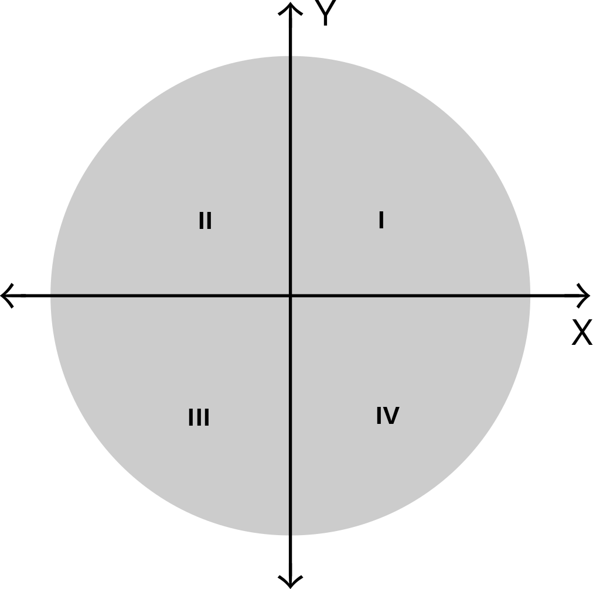
The Analog Waveguide has the right (Y) channel pre-patched to the left (X) channel internally,3 so if you have nothing plugged into the right input, the left input is used on both channels. If you intentionally want the right input to be mute you can put a dangling cable into the right input or simply turn the gain knob all the way down.
Each side of the Analog Waveguide — X and Y — is a feedback-delay network. The input signal is fed into a delay, a low-pass filter, and then back into the delay with some attenuation.
Now the rotation is simple if you understood everything so far. Every time we feed the delay output back to the input for the resonating effect, we can rotate this point on the two-dimensional space, representing the stereo signal, around the origin point of the coordinate system (0,0) by a given angle. At an angle of 0° the two feedback delay networks operate independently of each other — there is no cross-mix between them.
Since the tail of the resonance gets rotated every time it is fed back into the delay line, the rotation also represents the speed with which the timbre of the tail resonance is changing. This velocity is highest at 90° and 270°, while at 180° we get a flip-flopping reflection.
Mathematically, and also electrically, the rotation is a multiplication, subtraction, and addition with sine and cosine of the angle. If $\theta$4 is the angle of rotation, $x,y$ the current position, and $x',y'$ the new position in the Cartesian space, then:
The output of the module is the left and right (or X and Y) component of the signal. In other words: the two-dimensional signal gets projected back onto the two axes. It's basically a specific way of cross-mixing the two channels.
This rotation mix between two feedback-delay networks has two notable effects:
- The sum is always power preserving. This is an essential property for physical modeling synthesis and resonators in general, because then your resonating sound will not be at risk of exploding into uncontrollable feedback or dying into nothingness.
- The spectral spread of the overtones gets bent inharmonically. A single feedback delay (Karplus-Strong synthesis) always sounds like a one-dimensional resonator: a string. Our Analog Waveguide can do string sounds (with the rotation angle at 0°), but additionally can sound like two-dimensional resonators — gongs, plates, cymbals, membranes, drums, handpans, even trumpets — due to the scattering reflections in a plane which the rotation introduces.
We published a paper providing a deeper explanation of why exactly this inharmonic distortion happens: Wegener & Neupert, 2024.
1.3 Technical specification
Dimensions
| Width | 24 HP |
|---|---|
| Depth in rack (under panel) | 34 mm |
| PCB height in rack | 112 mm (some racks may be smaller!) |
Current draw per Eurorack rail
10- to 16-pin Eurorack power IDC connector, cable is included.
| Rail | Current |
|---|---|
| +12 V | 200 mA |
| −12 V | 131 mA |
| +5 V | Not connected |
Input / output specification
| Port | Range |
|---|---|
| 1V/Oct | −1.5 V to 5.5 V |
| FM | −8 V to 8 V |
| Lowpass | −8 V to 8 V |
| Feedback | −8 V to 8 V |
| Rotation | −8 V to 8 V |
| Audio In | −8 V to 8 V |
| Audio Out | −8 V to 8 V |
| USB-C | For firmware update. DFU mode device ID 0483:df11 |
1.4 Signal flow diagram
The Analog Waveguide is designed to be flexible and represent multiple physical or pseudo-physical5 acoustic models. It consists of several blocks that can be partially reconfigured to realize different physical models or acoustic functions.
The diagram above shows the simplified form of the signal flow block diagram with the base functionality (CV sources, normalled connections and knobs omitted). It features:
- Two delay lines → to simulate wave travel time,
- Two lowpass filters → to simulate frequency-dependent dissipation,
- A rotation scattering junction → to simulate branching and reflections of the acoustic waves,
- Two invert switches to invert the individual delay outputs,
- Several link switches to couple the CV control of the Y channel to the X channel, and
- Two Dry/Wet output mixers.
With these building blocks we can realize a series of physical models, described in the patch examples (Chapter 4).
Note that the Analog Waveguide can also be understood with reference to reverb design, as this is where its concept originated. See Gerzon, 1971 and Gerzon, 1972 for the original waveguide design concept. It can be mathematically best described as a Unitary Feedback Delay Network. A general description of such networks can be found in Stautner & Puckette, 1982. An implementation in Pure Data can be found in Puckette, 2011.
Individual Functions
The following sections are realized in pairs for the X- and Y channel.
2.1 Pitch Section
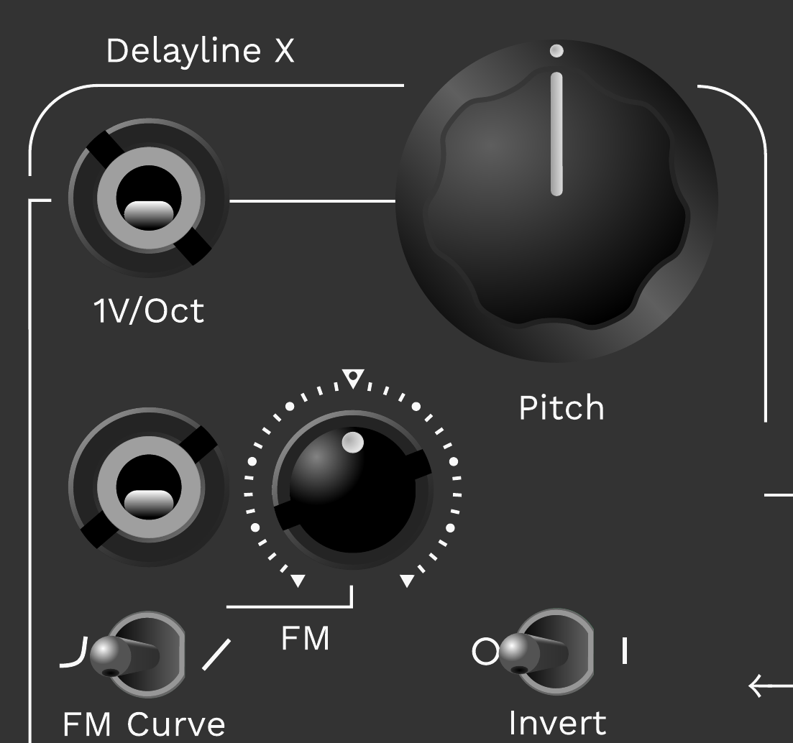
- 1V/Oct CV Input:
- Input for pitch information coming from a keyboard or sequencer. This affects the delay time of the BBD.6 The higher the pitch, the shorter the delay time. The 1V/Oct CV input of channel Y is normalled to the 1V/Oct CV input of channel X. The input range is −1.5 V to +5.5 V. The pitch tracks perfectly over this seven-octave range. The sample rate is 1.4 kHz.
- Pitch Knob:
- Adjusts the pitch of the channel. The pitch knob ranges from C0 to C4 when nothing (or 0 V) is plugged into the 1V/Oct input, or otherwise acts as an offset to the 1V/Oct input. Most pitch sources are positive only, meaning that you would want to turn the pitch knob counter-clockwise, when a 1V/Oct source is plugged in, to let the 0 V CV signal play the lowest note. If nothing is connected into the 1V/Oct CV input of channel Y and the pitch link switch is turned off, its pitch knob controls the offset to the pitch of the X channel.
- FM CV Input:
- Frequency modulation input to modulate the delay frequency with an LFO or another modulation source. The FM CV input of the Y channel is normalled to the FM CV input of the X channel. The input range is −8 V to 8 V, the sample rate is 1.4 kHz.
- FM CV Attenuverter Knob:
- Adjusts the depth of the frequency modulation. The zero point is in the middle with a center detent. Turning the knob left inverts the modulation.
- FM Curve Switch:
- This switch selects exponential (left position) vs. linear (right position) frequency modulation of the delay frequency. For slow vibrato effects choose exponential modulation; for fast audio-rate timbre-changing FM effects choose linear frequency modulation, as it preserves perceived pitch at high frequency rates.
2.2 Lowpass Section
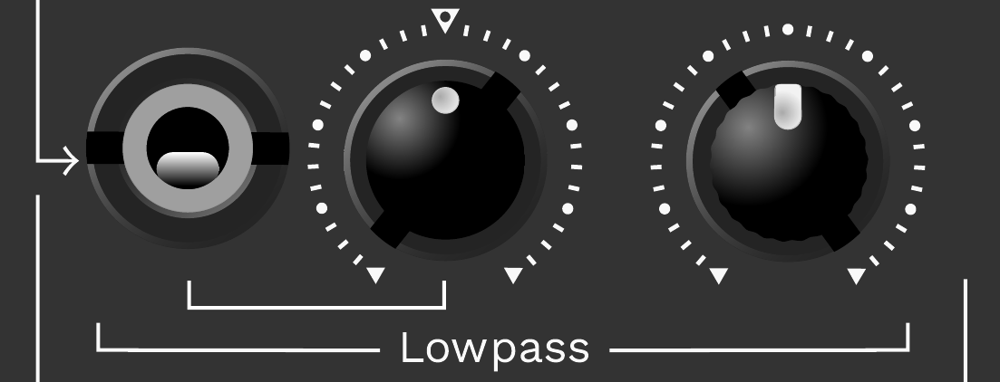
- Lowpass Knob:
- Controls the 6 dB/octave lowpass filter to simulate frequency-dependent damping. The frequency range is ~50 Hz to 20 kHz.
- Lowpass CV Input:
- CV input to control the cutoff frequency of the lowpass filter. This input is normalled to the 1V/Oct pitch input to allow key tracking of the filter. The input range is ±5 V.
- Lowpass CV Attenuverter Knob:
- Attenuverter to attenuate or invert the CV signal. When no input signal is connected to the Lowpass CV input, this knob controls the amount of key tracking. Turn the knob clockwise for positive key tracking and counter-clockwise for negative key tracking.
2.3 Feedback Section
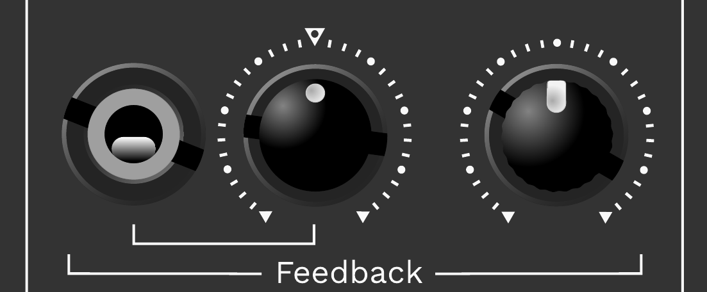
- Feedback Knob:
- Controls the feedback VCA volume to simulate damping by regulating the amount of signal fed back into the system. Turn counter-clockwise for short notes (fast decay) and clockwise for long sustained notes or self-oscillating drones.
- Feedback CV Input:
- CV input to control the VCA volume. The input range is ±5 V.
- Feedback CV Attenuverter Knob:
- Attenuverter to attenuate or invert the CV input signal.
2.4 Input and Output Section
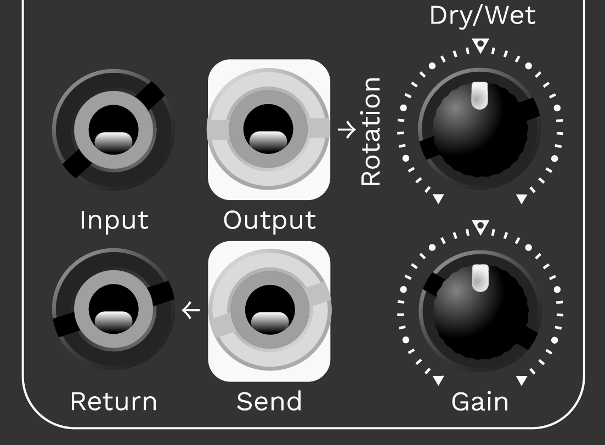
- Input Jack:
- This is the input for the audio signals that will be used to excite the Analog Waveguide. Each channel has its own input, so they can be independently excited, e.g. for duophonic play. The input range is ±12 V. Note that the Y input is normalled to the X input — the signal patched into the X input will also appear at the Y input if no cable is inserted into the Y input. You can break this connection by inserting a cable into the Y input.
- Output Jack:
- Each channel has an independent mono output, which, when combined, can be used to create a stereo signal. The output range is ±5 V. Note that the audio output of channel X is normalled to the rotation CV input (see the Rotation Section below).
- Send/Return Jacks:
- The Send/Return jacks allow you to patch in other modules — such as filters, phasers, flangers, or a second Analog Waveguide — into the feedback loop of the delay lines. The Send output is normalled to the Return input. Once a signal is inserted into the Return jack, the normalled connection is broken. This allows you to use the Send output as a copy of the audio output of the channel and apply it, for example, as an FM modulation source.
- Dry/Wet Knob:
- This knob controls the amount of the channel's clean input audio that will be mixed in with the channel's processed audio before being sent to the output of that channel. The middle position is 50% in / 50% processed, at the center detent.
- Gain Knob:
- This amplifies or attenuates the audio input signal. The gain spans from 0 to 10×.
2.5 Rotation Section
- Rotation Knob:
- Controls the angle of rotation between the channels. This is an endless potentiometer,7 so the angles of 0 degrees and 360 degrees are at the same knob position.
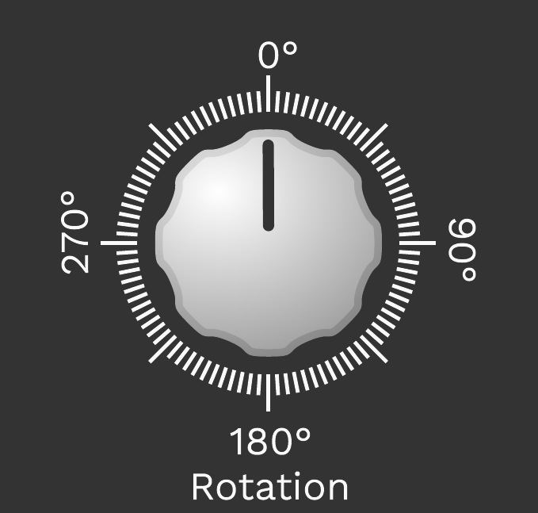
- Rotation CV Input:
- CV input for controlling the rotation angle. This input is normalled to the X channel's audio output, offering the possibility for creating non-linear FM-like sounds. The input range is ±8 V. The sampling frequency of this input is 48 kHz.
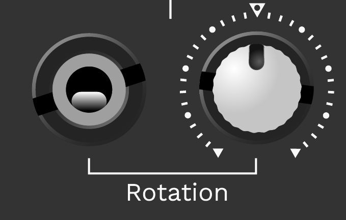
- Rotation CV Attenuverter Knob:
- Attenuverter to attenuate or invert the Rotation CV signal. If nothing is patched to the Rotation CV input, turning this knob will control how strongly the X channel's output modulates the CV input for rotation angle control. Turning this knob introduces non-linear (loudness-dependent) behavior to the sound. Louder sounds will be more heavily modulated and will therefore have brighter spectra. This is great for metallic drum sounds.
- Invert Switches:
- Each channel has an invert switch to invert the signal after it is rotated. This is akin to a phase inversion of 180 degrees, or a multiplication by −1. Inverting both channels and rotating by 180 degrees has the same effect, so using both at the same time will effectively cancel the rotation or inversion. Inverting only one of the two channels, however, will transform the rotation into a mirroring operation with a mirror axis at half of the set rotation angle.
2.6 Link Switches
Each link switch has an on and off position marked with I and O. When the link is active, the settings of the X channel controls take over and are replicated to their equivalent Y channel controls.
- Lowpass Link Switch:
- Controls whether or not the lowpass cutoff frequency of the Y channel follows the X channel. Flipping the switch to the right enables the link, flipping it left disables it. With the link enabled, the lowpass controls of the Y channel are disabled.
- Feedback Link Switch:
- Controls whether or not the amount of feedback of the Y channel follows the X channel. If you want to use both channels independently and have different note lengths, disable the link. With the link enabled, the feedback controls of the Y channel are disabled.
- Pitch Link Switch:
- Controls whether or not the pitch of the Y channel follows the X channel. With the link enabled, the Y channel can still be independently frequency-modulated, but the pitch knob and 1V/Oct input of the Y channel are disabled.
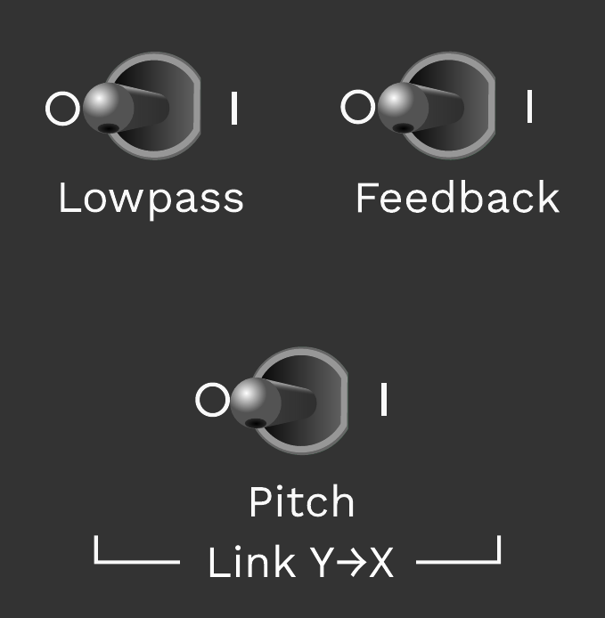
Display and Level Meters
3.1 Display
The display shows the module's output on x/y coordinates in real time, where the x-axis represents the amplitude of the X channel signal and the y-axis represents the amplitude of the Y channel signal. When using an oscilloscope, this method of displaying signals together is described as an "XY mode", and the resulting curves displayed are called Lissajous patterns.
A basic understanding of Lissajous patterns can help you understand how the parameters of the module are reflected in the curves displayed.
- Straight line:
- If the display shows a straight line at a 45 degree angle, both the X and Y audio signals have exactly the same amplitude, frequency and phase. If the amplitude of the X channel is greater than the Y channel, the line moves towards the x-axis and vice-versa. A signal only in the X channel results in a horizontal line, whereas a signal only in the Y channel results in a vertical line.
- Circles and ellipses:
- A circle or 45-degree-tilted ellipse means both signals have exactly the same frequency and amplitude, but different phases. At 0° phase shift we get a straight line at 45 degrees again, turning into a tilted ellipse between 0 and 90 degrees, and a perfect circle at 90 degrees. A phase difference between 90 and 180 degrees yields an ellipse tilted at 135 degrees, reaching another perfect circle at 270 degrees.
- Lissajous patterns:
- When the frequencies of the delay channels differ by integer multiples, we get so-called Lissajous patterns. The number of lobes displayed on each axis tells us the ratio of the frequencies of the X and Y channel signals — e.g. three lobes against Y and one lobe against X means a 3:1 frequency ratio. When the difference in frequencies is a non-integer multiple, the pattern appears to rotate three-dimensionally. Lissajous patterns mostly appear in harmonic settings of the Analog Waveguide — at 0° or 180° of rotation.
- Axis-symmetric patterns:
- When one of the two delay channels is inverted, we get axis-symmetric patterns around a symmetry axis at half the angle of the rotation knob setting.
- Rotation-symmetric patterns:
- With none or both of the channels inverted and the frequencies of both channels linked, we get point- (or rotation-) symmetric images around the coordinate origin. The complexity of the pattern increases with the rotation angle until it reaches 90 degrees, decreases until 180 degrees, then increases again.
3.2 Clipping Indicators
Above the round display are two level meters acting as audio signal clipping indicators. The level meters light up green to indicate a safe signal level, yellow to indicate that the levels are approaching clipping, and red when clipping / distortion is occurring. They fade to black when the signal decays. The left clipping detector shows the peak levels of channel X, the right clipping indicator shows the peak levels of channel Y. Use the gain knobs to reduce the input gain, or reduce the amount of feedback, to avoid clipping if you want to achieve a sound without distortion.
Patch Examples
Although the Analog Waveguide is not built to faithfully recreate the sound of acoustic instruments, it can create sounds with acoustic behaviors, because it is made up of building blocks inspired by physical acoustics. We think these patches are a great way to learn and memorize settings, and to understand what they are doing to the sound — because in the end it is probably easier for most people to relate to the sound of a guitar than to an "exponentially decaying, frequency-dampened harmonic series." And last but not least: it's fun!
4.1 Recommendations for excitation
Finding a good excitation signal for your patch is absolutely vital to good sound design! We have experimented a bit with what modules and characteristics make up good exciters, and we have found that a two-stage approach is favorable.
The first stage is used to create the initial energy for the note to play — this should be a short blip impulse of up to 50 ms in length. The peak voltage of this spike dictates the loudness of the note. A single impulse or a short noise burst contains energy in all frequencies, just like white noise. The impulse needs to rise fast enough to develop a good bright-sounding "click" to be usable.
The second stage controls the timbre of the note to be struck. We found that using bandpass and lowpass filters works well for this purpose. A bandpass filter will only allow through the partials of the resonator that it "lines up in frequency" with — that means, if we filter out everything except the frequencies between 400 and 600 Hz, then in the Analog Waveguide only the partials between 400 and 600 Hz will resonate, even if the fundamental is 100 Hz.
For the impulse stage you can use:
- Piezo microphones (connected through a preamp to the Analog Waveguide). Attach them to your desk, or a piece of wood, and strike it with drum sticks or brushes to capture structure-borne sounds and impact noises.
- ADSRs or other short exponentially decaying envelopes with very fast attack times. Beware that not all envelope modules deliver fast enough attacks!
- Drum triggers (short gates with up to 50 ms length).
- Sample and hold circuits.
- Square wave or sawtooth LFOs (useful if you want repeated note patterns).
For the timbre coloration stage, we found the following, non-exhaustive, list of filters very suitable. We recommend using dual/stereo filters to color two excitation impulses independently and then send them to the audio inputs of the Analog Waveguide's X and Y channels.
- Weston Precision Audio: SF1 Dual / Stereo Filter
- Vermona: TwinVCFilter
- Cwejman DFA-2, MMF-2
- Rob Hordijk/Klangbauköln: Twin Peak Resonator
- Epoch Modular: Twinpeak (discontinued)
Other approaches for excitation can be:
- Sawtooth waveforms for voice-like formant filter sounds.
- Filtered and modulated noise.
- Drum sounds.
- Slow sine and triangle LFOs (work well when the Analog Waveguide is close to self-resonance).
4.2 Duophonic String & Drum
You can play the two channels as independent Karplus-Strong physical models of strings and drums. To be able to control every parameter of the two channels independently, make sure to:
- Switch off all link switches.
- Set the rotation angle to zero degrees.
- Plug two different 1V/Oct CV sources into the 1V/Oct X and 1V/Oct Y inputs.
- Plug two different exciters into Input X and Input Y and adjust input levels.
To play two string models, set the invert switches to off; to play a drum-like sound, set the invert switch to on. Play with the Lowpass knob to control the frequency-dependent damping. Use the Lowpass CV attenuverter knobs to control the pitch tracking of the lowpass filter cutoff with the 1V/Oct signals. Make sure that nothing is plugged into the rotation CV input, then turn the Rotation CV attenuverter knob to add some non-linearity to the sound. Turning the knob far enough can create the sound of a string being struck by a hammer.
4.3 String with Pluck Position
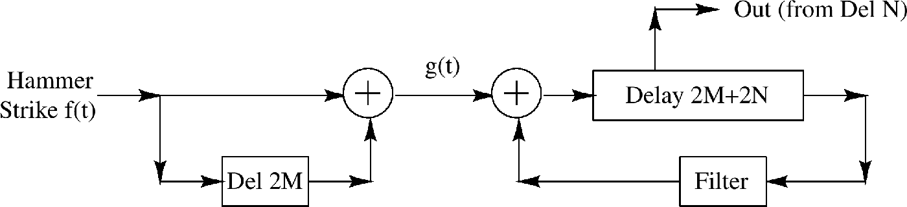
To model the pluck position of the string, we need to send our excitation signal through a comb filter before passing it into the Analog Waveguide's delay line. For this patch we will use both channels of the Analog Waveguide in a single voice.
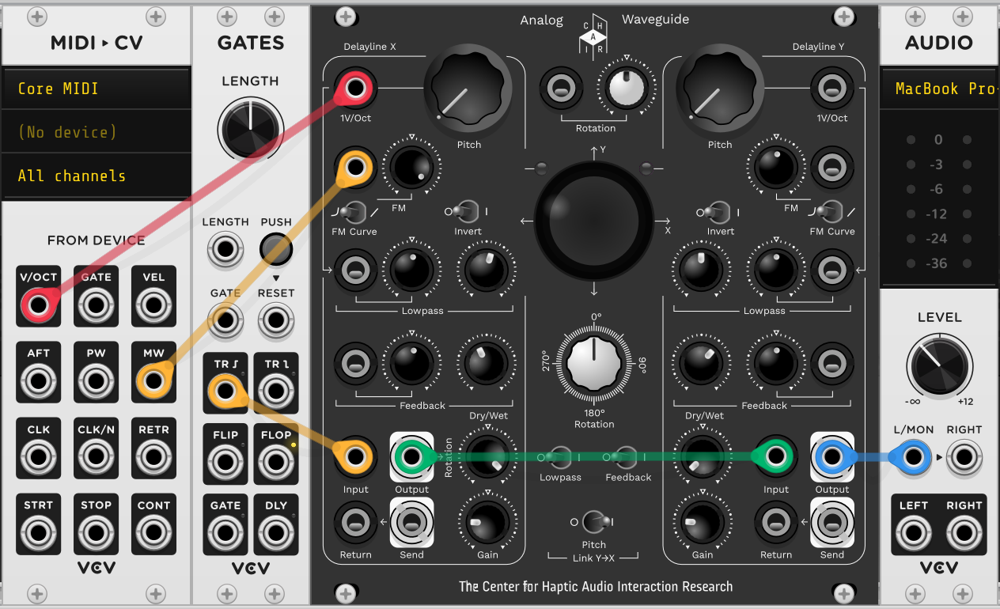
In the patch above,8 Delayline X constitutes the comb filter, Delayline Y models the string resonance. We need to patch the output of Delayline X into Delayline Y. It is important that the two delay lines don't mix (Rotation = 0°) and their feedback gains and filters are not linked (switches are in O position). Their pitch, however, should be synchronized (Pitch Link switch set to I position) so as to implement a tracking comb filter that adapts to the pitch of the string.
Use a modwheel or another modulation source to modulate the frequency of the comb filter (FM input, exponential curve setting). This parameter resembles the pluck position on the string. For every delay time that is a multiple of the period of the string length, the fundamental will be excited strongly. All other delay times will excite different partial overtones.
The comb filter's feedback (Delayline X) deepens the effect of partials emerging from the pluck position. Note that this feedback should not resonate longer than the actual string in Delayline Y, though.
It helps to add a little bit of damping — this can be achieved using the low pass filter in Delayline Y. Also, you will get a more convincing string sound when using a high pass filter on the click (or noise burst) signal before it enters the comb filter. For the high pass you will need an additional module that is not shown above.
Making sure that the Waveguide's two delay lines are not being mixed together may require some fine adjustment of the Waveguide's Rotation setting. To achieve this, begin with an unpatched Waveguide and then start by sending an input audio signal to channel X, and either setting the Y channel gain to zero or plugging a dangling patch cable into the Y channel input, so that no audio is fed into that channel. Set the Feedback amount on both channels to zero, the Rotation CV attenuverter knob to center, the channel X gain so that the signal is not clipping, and the Dry/Wet knobs completely to wet. Now listen to the output of the Y channel whilst adjusting the Rotation knob around the zero-degrees point. Find the setting where you hear the least amount of the channel X input signal — this corresponds to the position with the least mixing between channels.
4.4 Natural Trumpet/Brass
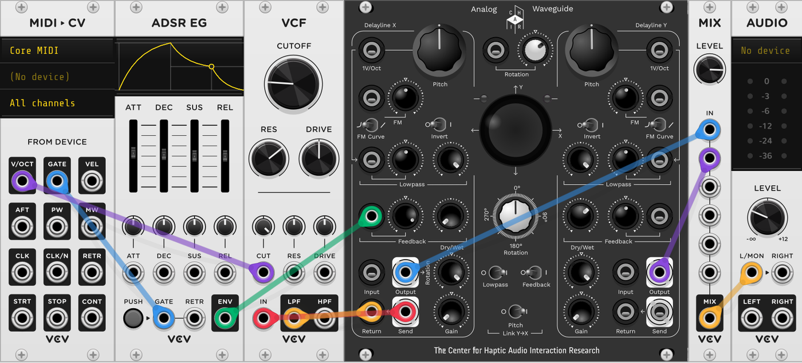
A natural trumpet is a trumpet without valves that can only play natural harmonics, i.e. the eigenmodes of its resonator. When playing the trumpet, the player excites exactly one harmonic (eigenmode) of the bore using lip pressure. By exciting different harmonics of the natural series, it is possible to play all notes of the twelve-tone scale at higher harmonics. The lower harmonics are too widely spaced (octave, fifth, ...) — only from the 8th overtone are tone steps possible. So to play a scale, the resonator needs to be roughly three octaves lower.
In our case, we use a single delay line as the bore, with a resonant filter patched into its feedback loop through the send/return connectors to excite the harmonics. Sweeping the resonant filter's cutoff steps through the harmonics of the delay line. If you want to play exact notes, use a 1V/Oct tracking filter with a quantized pitch source. To imitate the swell of the note, we use an ADSR that plugs into the delay's VCA, aka Feedback CV. The feedback path through the filter will only activate when the ADSR is triggered. The filter takes care of "choosing" the harmonic from the delay's eigenmodes. We set both invert switches to 0 and the rotation knob to 0°, so we get the natural harmonic series, just like a natural trumpet.
In this state, the patch will excite only the self-resonance of the bore (a sine wave) and will rather resemble a flute-like instrument. We are still missing an important part of the sound character of a trumpet: the non-linear mixing of pressure waves at the mouthpiece. In a real trumpet, the movement and airflow from the player's lips interferes with the reflected waves from the bore. This interference can be approximated by self-modulating the amplitude of the pressure wave modeled by channel X. To achieve this we can use the Rotation CV attenuverter knob — turning it away from center allows the outgoing wave from Delayline X to modulate itself (the rotation operation in a single delay can also be seen as a type of amplitude modulation with a sine wave). Now we get a typical brassy sound character.
We do not really need the second delay line for this patch, but we can use it to our advantage to make the sound richer. We tune it either exactly or slightly off from Delay X and adjust the feedback to our liking — detuning it will make the sound richer.
Another neat trick is to use an LFO to add some vibrato to one or both delay lines. Patch an LFO running at ≈7 Hz into the channel X FM CV input, switch the modulation curve to exponential, and turn the FM CV attenuverter knob just a few degrees off center to get a vibrato. This will result in more phase mismatches when we amplitude-modulate, making the sound richer. Note that the Y channel FM CV is normalled to that of the X channel, meaning you can use the other Y channel FM CV attenuverter to add vibrato to the second delay line as well.
Instead of using a triggered envelope, it can be more interesting to play the trumpet with an expressive controller that generates the envelope with a pressure signal — such as the Doepfer Trautonium/Ribbon Controller, Haken Continuum, a keyboard with aftertouch, or a breath controller. Just plug the pressure signal/aftertouch directly into the channel X Feedback CV input instead of the ADSR envelope.
4.5 Handpan/Steel Drum
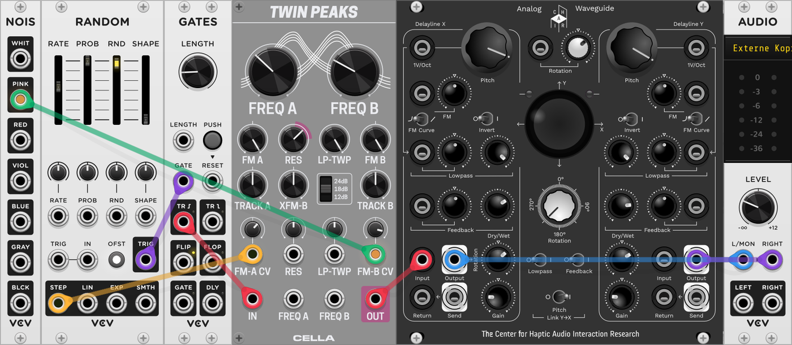
The Analog Waveguide can produce sounds similar to those of a handpan (Hang), or steel drum. If you adjust the dials correctly, you can produce shimmering harmonics and overtone melodies that give the impression of hearing the instrument being played by hand. The parameters of the Analog Waveguide itself are relatively easy to dial in:
- About 180° rotation — you can experiment between 135°–225°.
- Rotation CV slightly dialed in, ≈1–2 o'clock.
- Pitch link off.
- Different pitch settings between 200 Hz – 400 Hz on both channels.
- Feedback and lowpass link on, invert switches off.
- Set feedback to a longer decay, somewhere before self-oscillation occurs.
It is crucial to use the right excitation signal for the handpan patch to sound good. We got the best results with the Twin Peak9 dual bandpass filter, filtering a click (i.e. a very low frequency pulse), or a square wave/sawtooth LFO input signal. One of the two bandpass filter's center frequencies is set to the fundamental of the sound (≈200 Hz), the other center frequency should be tuned slightly lower, but modulated upwards in frequency with pink noise. The more intense the noise modulation, the more the sound resembles that of a handpan played with the palm of the hand rather than with the fingers. Less noise results in a duller but more voluminous sound.
Modulating the center frequency of the other bandpass filter using a sample-and-hold signal synchronized to the LFO creates different overtones, similar to playing different notes on a handpan. Increasing the Waveguide's Rotation CV attenuverter knob produces a stronger non-linear response in the sound. Combined with adding slightly more resonance (Q) on the excitation signal's bandpass filters, this results in a sound similar to that of a steel drum.
In the patch above we use the “RANDOM” module to generate a trigger and a sample and hold on each step. The pink noise comes from the "NOIS" module.
4.6 Unfolded String Model
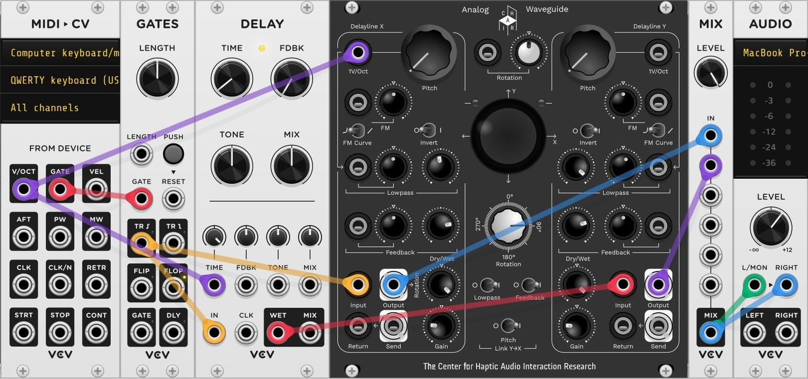
Here we will model the two impulses that run along a string in opposite directions when it is plucked. This requires both of the Analog Waveguide's delay lines, with the X channel modeling the impulse traveling right along the string and the Y channel the impulse traveling left. Both of these combined form the waveguide string model. Our modified rotation scattering junction behaves like an inverting reflection at the nut and the bridge of a string instrument, as illustrated above.
We can make a model of a string that represents physical reality a bit more closely by using two delay lines instead of just one.
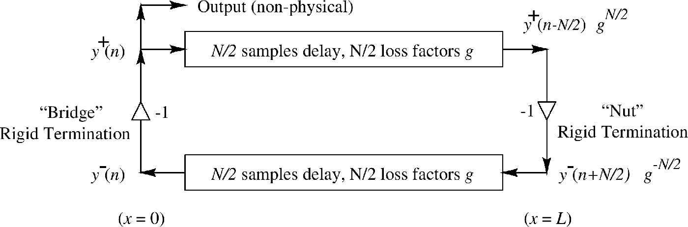
When a physical string on an instrument is plucked, two waves of vibration run through the string in opposite directions, emanating from the pluck position — call them the left- and right-moving waves. They reflect at the bridge and nut of the instrument and continue to travel in opposite directions, crossing each other once every period without interference until the sound dies out. We can model this process using one delay per wave direction. As illustrated above, the upper delay line carries the right-moving wave, the lower delay carries the left-moving wave. When changing directions, the waves reflect with an inversion — hence the multiplication by −1 at each end of the string.
To model this with the Analog Waveguide, we need to feed both delay lines into each other with a sign inversion before entering each delay. Achieving this requires some consideration of how to configure the Analog Waveguide so as to give us two inversions and feed the delay lines into each other in a big loop.
The rotation scattering junction at the Analog Waveguide's core is governed by the following two equations. Each delay output $x_d$ and $y_d$ is mixed into every output $x'$ and $y'$ by a rotation operation.
Additionally there are two invert switches to invert either the X or Y channel, or both. These are indicated mathematically by the ± sign:
In a special parameterization, this model can behave just like the waveguide string model. To achieve this, we set the rotation angle $\theta = 90°$, so $\sin\theta = 1$ and $\cos\theta = 0$. If additionally the Y channel is inverted, we get the original governing equations for the waveguide string model:
Here the aforementioned waves traveling in either direction of the string are modeled using the X and Y channels — combined they constitute the waveguide string model. Our modified rotation scattering junction behaves like an inverting reflection at the nut and bridge of a string instrument.
It is not necessary to patch the output of one delay into the other, since it is already routed (mixed) internally via the rotation core. The outputs of the two delay lines must be mixed together into one mono signal for the moving-wave modeling to be effective — listened to independently, the two channels would model the right and left vibrations moving separately, which is physically impossible.
If you add a delay on the input of one of the two delay lines, you can once again simulate a changing pluck position: this is directly analogous to the physical string — if you change the plucking position, the left- and right-going waves arrive at different times at the nut and bridge.
With this model you can also implement different reflection (impedance) behaviors on the bridge vs. the nut. You can access the bridge and nut via the Send and Return jacks on each delay line.
Menu System
The menu allows you to adjust some parameters of the module that are not accessible from the front plate, to show the firmware version, to initiate firmware updates, or to re-calibrate the module.
- To enter the settings menu, press the factory settings button on the right side of the module, next to the USB-C port, see figure below.
- To select a menu entry use the Rotation knob.
- To enter a submenu or edit a parameter, push the factory settings button.
- To exit or go back to the previous menu, scroll to the "Go back" menu entry and push the button.
On entering the menu, you will be presented with the following options:
To enter the setting menu, navigate to the "Settings" entry and press the factory settings button.
5.1 Settings
Here you can set parameters related to the display and internal sound processing.
Display Settings
This menu allows you to set the timer for the screen saver and the brightness of the display.
- Display Brightness
- Adjusts the screen brightness in steps of 1%. In case you encounter noise issues related to the display, try setting this value to 100%. This will deactivate the display dimming that is based on high frequency switching of the back light.
- Screen Saver
- Sets the timer for the screen saver between 5 s to 2 h, or "off".
Limiter Settings
The Analog Waveguide features a digitally controlled analog limiter in the feedback path of each delay line. They operate with the same parameters. You can adjust them in the limiter settings menu.
- Threshold [dB]
- Adjusts the threshold in decibels above which limiting starts. Values above −3 dB allow for more distortion. A value of 0 dB will deactivate the limiter. If you still encounter distortion try values below −3 dB and longer release times.
- Soft knee [dB]
- Allows for a smooth transition between limiting and distortion. For hard limiting choose 0 dB; a positive value will enable smooth limiting, with a bit less pumping and some added distortion.
- Release [ms]
- Adjust the release time in milliseconds. Larger values will limit more efficiently, while smaller values will result in less of a pumping effect.
- Reset
- Resets the limiter parameters to the default settings.
Calibration Procedures
Your module arrives fully calibrated and it is not foreseen that you would have to adjust the trimmers on the circuit boards or change the calibration values in the firmware. In case it is necessary to re-calibrate the module, perhaps due to ageing components or other circumstances, here are all the steps explained. A full calibration of the module requires BBD calibration and rotation & channel calibration.
For a totally uncalibrated module, it is recommended to follow all calibration routines in exactly the order they are presented here. For fine adjustments of an already calibrated module, single steps can be carried out in any order.
For best results, let the module heat up for approximately 15 minutes before starting calibration.
6.1 BBD Calibration
For the following steps you will need an oscilloscope or a voltmeter as well as a very small slotted screwdriver or trimmer adjustment tool. These instructions assume that the module has up to date firmware and is powered via a Eurorack power connector.
Adjust Delay Input Offsets
- Connect the voltmeter/oscilloscope to the testpoint marked DlyIn on the left side of the bottom circuit board.
- Adjust trimmer labelled Vbias X until you read 6 V.
- Repeat the same for the opposite side with Vbias Y.
Adjust Clock Trimmer
- Turn the pitch X and Y knobs on the front panel fully CCW to set the BBD clocks to their slowest speed.
- Turn the feedback X and Y knobs on the front panel fully CCW to suppress feedback.
- Turn the lowpass knobs fully CW to open both filters.
- Turn the rotation angle knob to 0°.
- Connect Analog Waveguide's outputs X and Y to a pair of speakers or headphones and turn up the amplification until you can hear the clock noise.
- Adjust trimmer ClkTrim X until the clock noise is as low as possible.
- Repeat the same for the opposite side with ClkTrim Y.
6.2 Rotation & Channel Calibration
For the following steps you will need a very small slotted screwdriver or trimmer adjustment tool and a small Phillips screwdriver.
Some steps are mutually dependent, which means that it may be necessary to follow the calibration procedure more than once for improved results. Each time you will get closer to the optimum.
Trim CV feed-through
Due to manufacturing tolerances of the analog multiplier chips on the module, it is necessary to trim voltage offsets at the rotation control voltage input, such that higher frequency modulation signals will not be heard at the output.
There are two trimmers on the top side of the upper PCB labeled X OFST and Y OFST. These adjust a millivolts' worth of offset to the inputs of the multipliers. You can adjust them with a small slotted screwdriver (or a dedicated trimmer adjustment tool). See figure below.
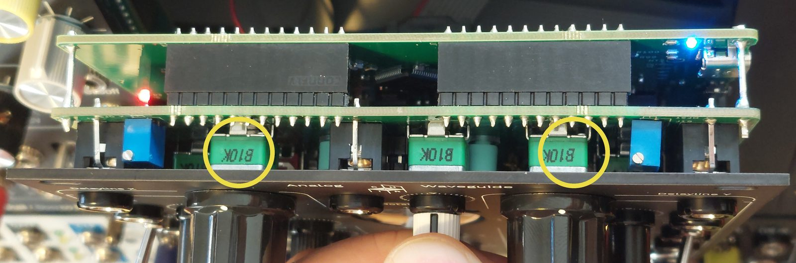
To help with the procedure, there is a program in firmware to generate a sine wave modulating the rotation automatically. Follow these steps to minimize the CV feed-through:
- Turn the X and Y channel Gain knobs on the front panel fully CCW to suppress any input signal.
- Turn the X and Y Feedback knobs on the front panel fully CCW to suppress feedback.
- Turn the Lowpass knobs of both channels fully CW to open both filters.
- Listen to the stereo output of the module through a speaker or headphones.
- Press the factory settings button.
- Use the Rotation knob to navigate to the menu entry and press the factory settings button to enter.
- You should hear a sine wave with a frequency of 220 Hz.
- Now turn the left trimmer until you reach the point where the sine tone is the quietest.
- Now turn the right trimmer until you reach the point where the sine tone is the quietest.
- Repeat the previous two steps until the sine tone cannot be trimmed quieter in volume.
- The resulting tone should be so quiet that you can hear some background noise with enough amplification.
Trim XY decay boost
To give the Feedback knobs on the front panel a musical range, self resonance should start to occur at around the 3 o'clock position. To set this we need to adjust the one-turn trimmers on the bottom side of the upper PCB. The trimmers are labeled Decay Boost X and Decay Boost Y. Be careful when adjusting them, they are very sensitive. See figure below.
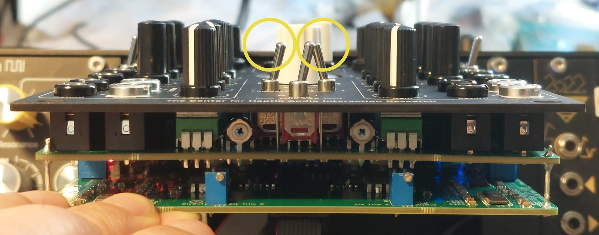
To help with the procedure, there is a program in firmware to measure the loudness of the Analog Waveguide's self resonance. Follow these steps to adjust the trimmers:
- Let the module heat up for approximately 15 minutes.
- Turn down the volume of your speakers or shut them off completely. It's going to be loud.
- Turn the X and Y channel Gain knobs on the front panel fully CCW to suppress any input signal.
- Turn the X and Y channel Feedback knobs on the front panel to a 3 o'clock position.
- Turn the Lowpass knobs on both channels fully CW to open both filters.
- Deactivate the Feedback Link switch on the front panel.
- Press the factory settings button.
- Use the Rotation knob to navigate to the menu entry and press the factory settings button to enter.
- With a small Phillips screwdriver, turn the "Decay Boost X" trimmer CCW until you hear a feedback tone on the left speaker and you see the RMS loudness bar graph showing a signal.
- Carefully adjust the trimmer such that the top of the bar graph resides in the green back lit area.
- The RMS signal power should be between −3 dB and −9 dB. The ideal target being at −6 dB.
- Press the factory settings button again and repeat the process for the "Decay Boost Y" trimmer.
- When the RMS value is good, press the factory settings button to return to the menu.
Trim XY channel balance
To balance the X and Y channels in their overall volume it is necessary to adjust the Y Gain trimmer on the right side of the upper PCB. See figure below.
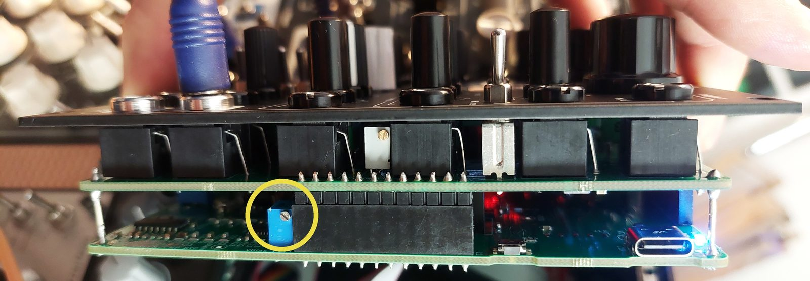
Follow these steps to adjust the trimmer:
- Turn the X and Y channel Gain knobs on the front panel fully CCW to suppress any input signal.
- Turn the X and Y channel Feedback knobs on the front panel to around 3 o'clock.
- Turn the Lowpass knobs on both channels fully CW to open both filters.
- Activate the feedback link switch on the front panel.
- Press the factory settings button.
- Use the Rotation knob to navigate to the menu entry and press the factory settings button to enter.
- You will hear the playback of tones on the output of the module. The screen should show a red and a blue line representing the RMS volume of the tones played back. The blue line represents the X (left) channel and the red line represents the Y (right) channel. At the bottom of the screen their average difference in signal power in decibels is shown. The goal is to reduce this average difference to less than 2 dB.
- Adjust the left Feedback knob until the blue line is roughly diagonal.
- With a small slotted screwdriver, turn the Y Gain trimmer to adjust the decay of the red line. Turning CCW increases the decay, turning CW decreases the decay.
- Adjust the trimmer until both graphs overlap as much as possible. You are controlling the shape of the red graph with the trimmer.
- When the 2 dB target is met, the routine finishes automatically.
If you see strange dips in one or both RMS power measurement lines, this is due to large offset errors on the DAC outputs that are corrected in the auto-calibration step. Should you find it impossible to reach the target difference of 2 dB here, move on to the auto-calibration explained in the next section by canceling the process with a press of the factory settings button.
Auto-calibration
The module implements a mathematical rotation in 2D space (made up by the signals in the analog delay lines) with the help of digitally controlled analog multipliers. To make sure this rotation is carried out with the highest possible precision the controller for the multipliers needs to be calibrated. Luckily this process can be carried out automatically by adjusting different parameters and simultaneously taking RMS measurements of the outputs.
If your module's rotation operation is not well calibrated, then the decay of sounds will vary with the rotation angle. In this case a re-calibration of the controller is recommended.
- Turn the X and Y channel Gain knobs on the front panel fully CCW to suppress any input signal.
- Turn the X and Y channel Feedback knobs on the front panel to around 3 o'clock.
- Turn the Lowpass knobs on both channels fully CW to open both filters.
- Activate the feedback link switch on the front panel.
- Press the factory settings button.
- Use the Rotation knob to navigate to the menu entry and press the factory settings button to enter.
- Let the automatic calibration procedure run. It will take approximately two minutes to finish.
The module should be fully calibrated now. To check if the module has been set up with appropriate calibration values, read the next section. Running the auto-calibration again (without re-initialization) will help fine tune the calibration even further.
Edit/reset calibration parameters
This menu lets you view and edit the calibration parameters for the digitally controlled rotation operation. It can help with sanity checking the calibrated values. References for appropriate values are shown below.
| Value | min. | max. |
|---|---|---|
| sine/cosine X/Y scale | +0.4 | +0.5 |
| sine/cosine X/Y offset | −50 | +50 |
If the calibrated values of your module lie outside of the ranges listed above, consider resetting the calibration values to the defaults as described in the next section and then running the auto-calibration routine again. If the problem persists, please post on our forum at discourse.chair.audio or contact us directly via support@chair.audio.
Editing the calibration data
It is not normally recommended to change the calibrated values of the Waveguide's parameters manually. However, as an emergency option, it is possible to edit these values by hand. To edit the parameters, navigate to them, click the factory settings button, then turn the Rotation knob to change them.
Re-initializing the calibration data
If a previous auto-calibration failed, you can re-initialize (factory reset) the calibration values to their defaults here. After resetting, you will need to run the auto-calibration again, otherwise the module will be uncalibrated and will not sound good!
To reset the calibration values to their defaults (= good initial guesses) proceed with the following steps:
- Press the factory settings button.
- Rotation knob to navigate to the menu entry and press the factory settings button to enter.
- In this menu, navigate to the "Re-initialize" entry.
- To confirm, press the factory settings button.
- The scale values should now be reset to +0.45 and the offset values to 0.0.
You now need to run the auto-calibration procedure again to re-calibrate the module.
Firmware Update
We will make firmware updates available occasionally. Firmware updates may improve performance and stability, add features or fix bugs. They may also introduce new bugs, but we still encourage you to stay up-to-date. Note: since the Waveguide's signal path is analog, the power of the module's microcontroller code over its sound is restricted to the digital functions of the module. As such, we kindly request that you curb your expectations of what future firmware updates might be able to deliver in terms of new features.
7.1 Firmware Version
You can check which firmware you are using by pressing the factory settings button on the right side of the bottom board, next to the USB-C port. The menu entry "Show firmware version" shows the currently installed firmware version along with the build date. If your firmware version is lower than v.+fwv+, please update. See the Firmware Version History chapter for a changelog of the firmware versions. To update, download the firmware from our website discourse.chair.audio, unzip the archive, and follow the procedure listed in the next section.
7.2 Firmware Update
Using the Web Updater
The easiest and preferred way to update the Analog Waveguide is by using our WebUSB updater. It only requires a Chromium web browser to run. Head to chairaudio.github.io/CHAIR-browser-dfu using Google Chrome, Microsoft Edge, Brave, Opera, or any other Chromium-based browser.10 Follow the instructions you find on the website above.
Using STM32 Cube Programmer
Alternatively, you may also use the STM Cube Programmer11 to update the firmware. You can download the software without registering for an account on STM by clicking on "Download as a guest" when asked to log in or register.
- Press the factory settings button momentarily.
- Use the Rotation knob to navigate to the "Firmware update mode" menu entry and press the factory settings button to enter.
- Press and hold the firmware update button for two seconds to put the module into firmware update mode.
- You are now in firmware update mode. The module will stay unresponsive until the update is complete.
- Connect the Analog Waveguide to your computer with a USB-C data cable.
- Open STM Cube Programmer.
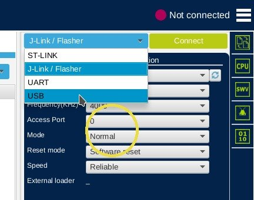
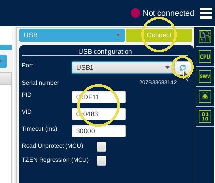
0xDF11 and VID: 0x0483, then click "Connect".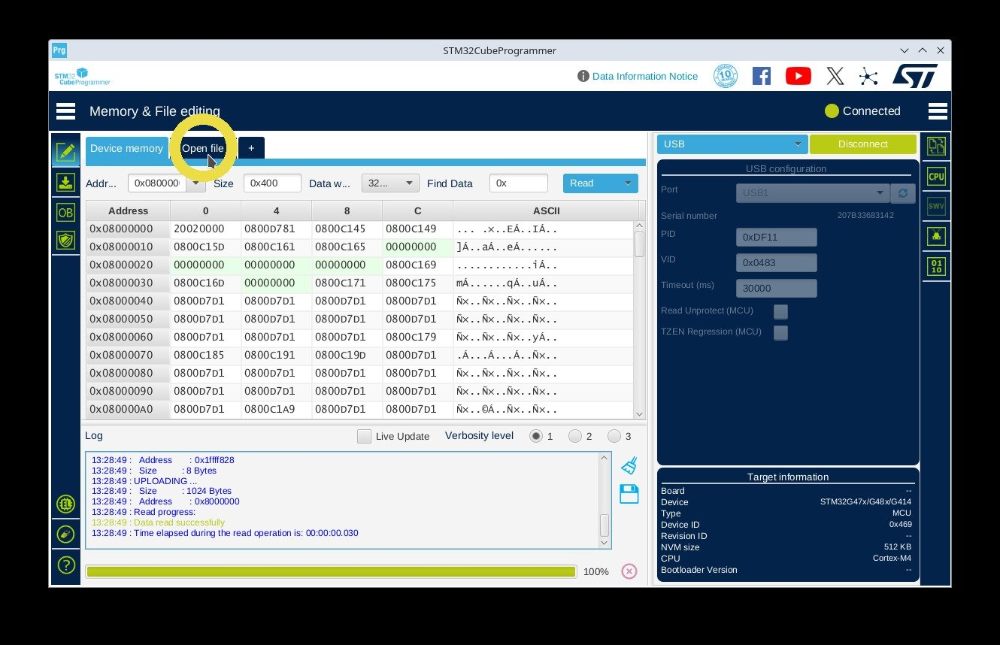
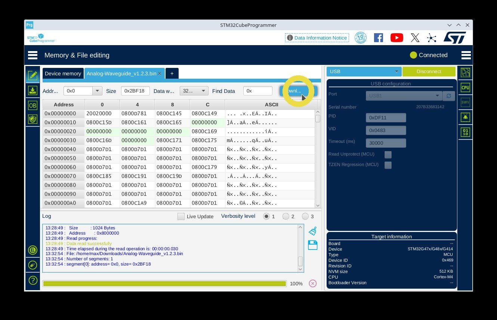
- Click the "Open file" tab and choose the new firmware file from your file system.
- Click the "Download" button.
- The download process will start now, wait for it to finish.
- Unfortunately the device doesn't reboot automatically and there is no option to do so from the programmer, so you will need to manually switch the Analog Waveguide's power source off and on again.
Congratulations, you have updated your firmware.
Using command line tool DFU util
Lastly, the most basic method for a firmware update is the command line tool dfu-util.12 To update via command line follow these steps:
- Press the factory settings button momentarily.
- Use the Rotation knob to navigate to the "Firmware update mode" menu entry and press the factory settings button to enter.
- Press and hold the firmware update button for two seconds to put the module in firmware update mode.
- You are now in firmware update mode. The module will stay unresponsive until the update is complete.
- Connect the Analog Waveguide to your computer with a USB-C data cable.
- Using dfu-util run:
You may get the following error, which you can safely ignore:
sudo dfu-util -a 0 -i 0 -s 0x08000000:leave -D Analog-Waveguide-Firmware_v+fwv+.bindfu-util: Error during download get_status. - When the download is finished the module will restart. You may disconnect the USB-C cable now.
Congratulations, you have updated your firmware.
7.3 Troubleshooting
Calibration Data is lost
In some rare and unusual cases it may be possible for the calibration data stored in the Analog Waveguide's memory to be overwritten. For example, when the option "full erase" in the STM Cube Programmer is set. In this case, you need to re-calibrate your Analog Waveguide. Follow the steps from Auto-calibration.
Getting into Firmware Update Mode
Power cycling the Analog Waveguide while it is in firmware update mode should not cause any problems, as long as the firmware update process was not initiated and running at the time of power loss. However, in case something goes wrong during an update and the module does not behave as intended afterwards, have no fear! There is no risk of bricking the device. Simply re-initiate the update with the following steps:
- Connect the Analog Waveguide to a Eurorack power supply using the ribbon power cable, but DO NOT supply power yet.
- Connect the module via a USB-C data cable to your computer.
- Press and hold the firmware update button and then switch the power supply to the Eurorack ribbon cable on.
- Switch the power supply to the Eurorack ribbon cable on.
- You are now in firmware update mode and can release the firmware update button.
- Proceed further from the dfu-util step above with your preferred update software.
If you still encounter problems please join and consult our online forum discourse.chair.audio or contact us at support@chair.audio.
Cleaning and Maintenance
Use a dust cover or cloth to keep your Eurorack system protected and dust free. If dust accumulates, use a handheld manual air blower (the kind used for cleaning photographic equipment) or alternatively a vacuum cleaner to remove it. In case contactless methods do not suffice for dust removal, use a cleaning gel (usually sold for car interiors, a slimey/gooey material), or alternatively a soft brush and gently wipe affected surfaces. If you need to remove greasy stains, use a small amount of mild soap in lukewarm water on a soft fabric.
Do not rub on the Analog Waveguide's display glass. Do not apply force. Never use alcohol (rubbing alcohol, isopropanol, spiritus, etc.) to clean acrylic surfaces under tension like the watch-glass on the Analog Waveguide. If you need professional repair work, get in touch with us.
Firmware Version History
- 1.2.3
- Digitally controlled analog limiter with soft knee on internal feedback path minimizes input and feedback distortion. Limiter parameters settable in the menu. More flexible menu parameter editing and rendering. Use only Rotation knob + push button in menu. MPU/RAM optimizations allowing for slightly bigger vertical waveform image size and higher rotation CV sample rate (81.92 kHz). Higher waveform resolution thanks to higher internal sample rate. Fixes flickering peak indicators. Mute when entering menu. Screen saver with settings. Display brightness with settings. New higher order digital filters on digital interface elements resulting in lower noise on all knobs, most noticeable on rotation CV attenuverter. Lower noise and lower latency on pitch and FM CV inputs. Fixes zipper noise on rotation control knob.
- 1.0.5
- Long press (to enter firmware update mode) is now a little bit less long (2 instead of 3 seconds).
- 1.0.4
- Corrects endless potentiometer rotation direction and waveform display (y-axis was inverted on display, 360 degree potentiometer rotation direction was reversed — these two bugs almost canceled each other out and therefore remained undetected).
- 1.0.2
- Accelerated display. Made button press more robust. Reordered menu items to reflect recommended order for calibration. Firmware update (bootloader) mode now accessible through menu.
- 1.0.0
- Initial release.